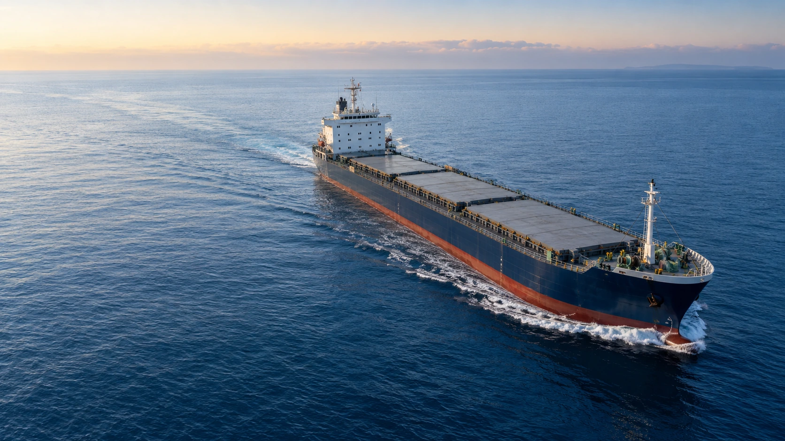

A clear course.An open horizon.
Rooted in shipownership.
Connected to the world of maritime trade.
DRY CARGO/5,000 TONNES
Our foundation
is at sea.
Gate One LTD is a shipowning company with a focus on dry cargo and maritime activities.
At the centre of our business is an owned dry cargo vessel built in 2014. Our activities connect vessel ownership with cargo transportation, chartering and port agency.
Discover our activitiesOwned dry cargo vessel
Year of build
Vessel tonnage
One maritime
perspective.
From the vessel itself to the voyage and the port. Four connected areas of maritime activity.
01Shipownership
Vessel ownership is the foundation of Gate One LTD. Our owned dry cargo vessel gives the company a direct connection to the assets at the heart of maritime trade.
OUR FOUNDATION02Cargo transportation
Maritime transportation of dry cargo. Each shipment starts with the cargo requirements, the vessel’s suitability and the conditions of the intended voyage.
DRY CARGO SHIPPING03Chartering
Vessel chartering for an agreed voyage or period. Cargo, timing and commercial terms shape each individual arrangement.
VESSEL & VOYAGE04Port agency
Vessel support during port calls, connecting the ship with the shore. Agency activity centres on the coordination required for arrival, the port stay and departure.
SHIP TO SHOREAt the heart
of our business.
A 5,000-tonne dry cargo vessel.
Built in 2014. Owned by Gate One LTD.
- VESSEL TYPE
- Dry cargo
- YEAR OF BUILD
- 2014
- VESSEL TONNAGE
- 5,000 tonnes
- OWNERSHIP
- Gate One LTD
A tangible asset.
A long-term view.
We see shipownership as a long-term commitment. Our focus is on the vessel, the people around it and the commercial relationships that give every voyage its purpose.
Ownership
A business grounded in a real maritime asset.
Connection
Bringing the vessel, the cargo and the port into one conversation.
Perspective
Looking beyond a single voyage to the relationship ahead.